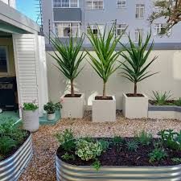
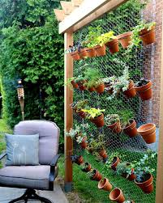
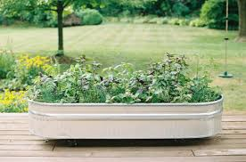

Getting Started with Urban Gardening
Whether you live in a flat, a face-me-I-face-you, or just have a balcony, this guide shows how to grow your own food with little space and budget.
Choosing What to Grow
Popular options include fluted pumpkin (ugu), scent leaf, okra, tomatoes, and peppers. These plants adapt well to Nigerian climate and can thrive in containers.
Maximizing Small Spaces
- Use sacks, buckets, and plastic bottles for vertical gardening.
- Old tires and crates can serve as raised garden beds.
- Train plants upward using sticks, bamboo, or strings.
Dealing with Nigeria’s Weather
Dry Season: Water early in the morning or late evening to reduce evaporation. Mulch your soil with dried grass or leaves.
Rainy Season: Ensure proper drainage in containers to avoid root rot. Raise garden beds off the ground if possible.
Naija-Friendly Gardening Tips
- Use containers: Buckets, old paint cans, and sacks work perfectly.
- Water wisely: Water early in the morning or evening to reduce evaporation.
- Compost: Recycle kitchen scraps into natural fertilizer.
- Seasonal advice: Plant leafy greens in rainy season; root crops during dry season.
What Can You Grow?
Not sure where to start? Use our suggestion tool to find plants that fit your space:
Sample Garden Setups


